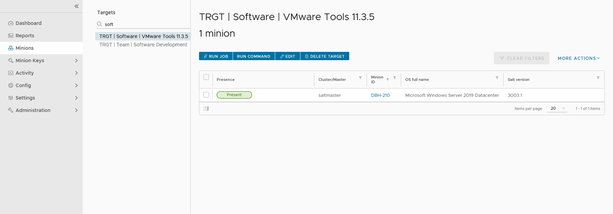

VMware vRealize SaltStack Config as a Windows Server Admin - Part 7

VMware vRealize SaltStack Config as a Windows Server Admin - Part 7
The more I use VMware vRealize SaltStack Config as a Windows Server Admin the more I see the importance of having grain information added to the minion to be able to target servers many different ways. During a recent discussion it was suggested to have the ability to target Windows Server minions by the Windows server Features|Roles that were installed on the server and by which software was installed on a server. There are built-in salt functions to get Features|Roles and installed software. Here is the code I used to get the information and add to the minion grain file using PowerShell.
This will allow you to create targets to:
- minions with specific VMware Tools Versions
- minion with Web Server Feature|Role enabled
- etc...
Salt Functions:
{{< highlight powershell >}}
The POSH-SSH PowerShell module MUST be installed to use this code.
Name of Minion that you want to add grain data
$minion = 'DBH-210'
----- [ SSH Connection to SalStack Config Server ] ------------------------------------
Write-Host 'Making SSH Connection to SaltStack Config Server...'
$Server = 'ssc.vCROCS.local'
$userName = 'root'
$Password = 'VMware#1'
The next line is how to create the encrypted password
$psPassword = ConvertTo-SecureString -String $Password -AsPlainText -Force
$creds = new-object -typename System.Management.Automation.PSCredential -argumentlist $username, $psPassword
$Params = @{
"ComputerName" = $Server
"Credential" = $creds
} # End Params
SSH Connection to SaltStack Server
$sshSession = Get-SSHSession
if($sshSession.SessionId -eq 0){
Write-Host 'SSH Connection to SSC Server already completed'
} # End If
else{
Write-Host 'Creating new SSH Connection to SSC Server'
New-SSHSession @Params
} # End Else
----- [ Start Adding Grain Data ] ---------------------------------------------------------------------------
----- [ Minion Get Windows Server Features|Roles Installed ] ------------------------------------
Write-Host 'Getting Windows Server Features|Roles Installed...'
$sshCommand = 'salt "' + $minion + '" win_servermanager.list_installed --output=json'
#$sshCommand
$Params = @{
"SessionId" = 0
"Command" = $sshCommand
} # End Params
$results = Invoke-SSHCommand @Params
$features = $results.Output
$features = $results.Output | ConvertFrom-Json
$features = $features.PsObject.Properties.Value
$features = $features | ConvertTo-Xml
Append Each Feature|Role information to grains
Write-Host 'Appending Windows Server Features|Roles Installed to grains...'
$grainsKey = 'vCROCS_Windows_Feature'
foreach($feature in $features.Objects.Object.Property){
$grainsValue = $feature.Name + ' | ' + $feature.'#text'
Grains Append
$sshCommand = 'salt "' + $minion + '" grains.append ' + $grainsKey + ' "' + $grainsValue + '"'
#$sshCommand
$Params = @{
"SessionId" = 0
"Command" = $sshCommand
} # End Params
Invoke-SSHCommand @Params
} # End Foreach
----- [ Minion Get Windows Server Installed Software ] ------------------------------------
Write-Host 'Getting Windows Server Installed Software...'
Get Installed Software
$sshCommand = 'salt "' + $minion + '" pkg.list_pkgs --output=json'
#$sshCommand
$Params = @{
"SessionId" = 0
"Command" = $sshCommand
} # End Params
$results = Invoke-SSHCommand @Params
$installedPackages = $results.Output
$installedPackages = $installedPackages | ConvertFrom-Json
$installedPackages = $installedPackages.PsObject.Properties.Value
$installedPackages = $installedPackages | ConvertTo-Xml
$grainsKey = 'vCROCS_Windows_Installed_Software'
Append Windows Server Installed Software to grains
Write-Host 'Appending Windows Server Installed Software to grains...'
foreach($installedPackage in $installedPackages.Objects.Object.Property){
$grainsValue = $installedPackage.Name + ' | ' + $installedPackage.'#text'
Grains Append
$sshCommand = 'salt "' + $minion + '" grains.append ' + $grainsKey + ' "' + $grainsValue + '"'
#$sshCommand
$Params = @{
"SessionId" = 0
"Command" = $sshCommand
} # End Params
Invoke-SSHCommand @Params
} # End Foreach
----- [ Add a Date that grains last updated ] ----------------------------------------------------------------
$grainsupdateDate = Get-Date
$grainsValue = $grainsupdateDate.ToString("MM/dd/yyyy")
$grainsKey = 'vCROCS_last_grains_update'
Grains Append
$sshCommand = 'salt "' + $minion + '" grains.append ' + $grainsKey + ' "' + $grainsValue + '"'
#$sshCommand
$Params = @{
"SessionId" = 0
"Command" = $sshCommand
} # End Params
Invoke-SSHCommand @Params
----- [ End Adding Grain Data ] ---------------------------------------------------------------------------
----- [ Sync minion Grain Data ] ------------------------------------------------------------------
Write-Host 'Syncing Minion Grain Data...'
Sync Grains Data
$sshCommand = 'salt "' + $minion + '" saltutil.sync_grains'
#$sshCommand
$Params = @{
"SessionId" = 0
"Command" = $sshCommand
} # End Params
Invoke-SSHCommand @Params
----- [ Disconnect from SaltStack Config Server ] ------------------------------------------------------------------
Write-Host 'Disconnecting from SaltStack Config Server...'
Remove-SSHSession -SessionId 0
----- [ End of Code ] ---------------------------------------------------------------------------
{{< /highlight >}}
Example grains file after running script
The default location of the grains file is in directory “C:\salt\conf"
{{< highlight powershell >}}
vCROCS_Windows_Feature:
- FileAndStorage-Services | File and Storage Services
- NET-Framework-45-Core | .NET Framework 4.7
- NET-Framework-45-Features | .NET Framework 4.7 Features
- NET-Framework-Core | .NET Framework 3.5 (includes .NET 2.0 and 3.0)
- NET-Framework-Features | .NET Framework 3.5 Features
- NET-WCF-Services45 | WCF Services
- NET-WCF-TCP-PortSharing45 | TCP Port Sharing
- PowerShell | Windows PowerShell 5.1
- PowerShell-ISE | Windows PowerShell ISE
- PowerShellRoot | Windows PowerShell
- PowerShell-V2 | Windows PowerShell 2.0 Engine
- RSAT | Remote Server Administration Tools
- RSAT-Feature-Tools | Feature Administration Tools
- RSAT-SNMP | SNMP Tools
- SNMP-Service | SNMP Service
- SNMP-WMI-Provider | SNMP WMI Provider
- Storage-Services | Storage Services
- System-DataArchiver | System Data Archiver
- Telnet-Client | Telnet Client
- WoW64-Support | WoW64 Support
- XPS-Viewer | XPS Viewer
vCROCS_Windows_Installed_Software:
- Microsoft Silverlight | 5.1.50918.0
- Microsoft Visual C++ 2013 Redistributable (x64) - 12.0.40664 | 12.0.40664.0
- Microsoft Visual C++ 2013 x64 Additional Runtime - 12.0.40664 | 12.0.40664
- Microsoft Visual C++ 2013 x64 Minimum Runtime - 12.0.40664 | 12.0.40664
- Microsoft Visual C++ 2015-2022 Redistributable (x64) - 14.30.30704 | 14.30.30704.0
- Microsoft Visual C++ 2015-2022 Redistributable (x86) - 14.30.30704 | 14.30.30704.0
- Microsoft Visual C++ 2022 X64 Additional Runtime - 14.30.30704 | 14.30.30704
- Microsoft Visual C++ 2022 X64 Minimum Runtime - 14.30.30704 | 14.30.30704
- Microsoft Visual C++ 2022 X86 Additional Runtime - 14.30.30704 | 14.30.30704
- Microsoft Visual C++ 2022 X86 Minimum Runtime - 14.30.30704 | 14.30.30704
- Salt Minion 3003.1 (Python 3) | 3003.1
- UniversalForwarder | 8.2.4.0
- VMware Tools | 11.3.5.18557794
vCROCS_last_grains_update:
- 01/14/2022
{{< /highlight >}}
SaltStack Target using Windows Server Software Installed:
Show all minions that have VMware Tools | 11.3.5.18557794 installed

Lessons Learned:
- Windows Server Features|Roles make a great way to target minions.
- Windows Server installed software also makes a great way to target minions.
Salt Links I found to be very helpful:
- SaltStack Cheat Sheet
- SaltStack Tutorials
- SaltStack Documentation
- SaltStack Community Slack Channel
- Learn vRealize Automation
- Learn SaltStack Config
When I write about vRealize Automation ("vRA") I always say there are many ways to accomplish the same task. SaltStack Config is the same way. I am showing what I felt was important to see but every organization/environment will be different. There is no right or wrong way to use Salt. This is a GREAT Tool that is included with your vRealize Suite Advanced/Enterprise license. If you own the vRealize Suite, you own SaltStack Config.
- If you found this Blog article useful and it helped you, Buy me a coffee to start my day.